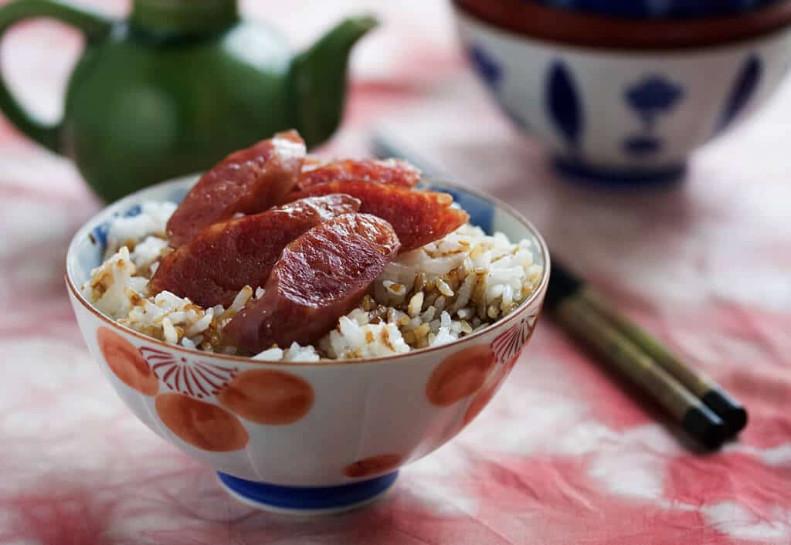

Breakfast Scramble Recipe
Everyone loves a simple breakfast! My girlfriend made this for me a few months ago, and ever since, I eat it nearly everyday.
It is super simple, super fast, and super yummy. You can definitely throw in more seasonings or veggies if you want to spruce up this dish,
or you can keep it nice and easy like me. Either way it's good as fuck.
Ingredients
- 1/4 cup Jasmine rice (uncooked)
- 4 Amylu chicken sausage links
- 2 eggs
- Preferred amount of Soy sauce
- Preferred amount of Sriracha
How It's Made
- Cook the jasmine rice. If you don't know how, here's how you do that.
- Slice the sausage into small pieces, and brown them off in the skillet on medium heat.
- While the sausage browns,it's smart to sauce up the rice. Mix in your preferred amount of soy and/or sriracha into the rice.
- Once the sausage is done, put it over the rice.
- Cook the egg the way you like it.
- Once the egg is done, throw it on top off the sausage and rice.
- Now eat it and relish in it's simple magnificence!
The finished product

Image from recipetineats
Home